#Load required packages
library(tidymodels)
library(tidyverse)
library(here)
library(gt)
library(knitr)
library(kableExtra)Model Fitting Exercise
Model Fitting
For this exercise, I will work with data on the drug candidate Mavoglurant and practice modeling in the tidymodels framework.
#Define random seed value
rngseed = 1234
#Load Mavoglurant data
data_path <- here("fitting-exercise", "Mavoglurant_A2121_nmpk.csv")
data <- read_csv(data_path)Data Exploration
#Get structure of data
summary(data) ID CMT EVID EVI2
Min. :793.0 Min. :1.000 Min. :0.00000 Min. :0.0000
1st Qu.:832.0 1st Qu.:2.000 1st Qu.:0.00000 1st Qu.:0.0000
Median :860.0 Median :2.000 Median :0.00000 Median :0.0000
Mean :858.8 Mean :1.926 Mean :0.07394 Mean :0.1613
3rd Qu.:888.0 3rd Qu.:2.000 3rd Qu.:0.00000 3rd Qu.:0.0000
Max. :915.0 Max. :2.000 Max. :1.00000 Max. :4.0000
MDV DV LNDV AMT
Min. :0.00000 Min. : 0.00 Min. :0.000 Min. : 0.000
1st Qu.:0.00000 1st Qu.: 23.52 1st Qu.:3.158 1st Qu.: 0.000
Median :0.00000 Median : 74.20 Median :4.306 Median : 0.000
Mean :0.09373 Mean : 179.93 Mean :4.085 Mean : 2.763
3rd Qu.:0.00000 3rd Qu.: 283.00 3rd Qu.:5.645 3rd Qu.: 0.000
Max. :1.00000 Max. :1730.00 Max. :7.456 Max. :50.000
TIME DOSE OCC RATE
Min. : 0.000 Min. :25.00 Min. :1.000 Min. : 0.00
1st Qu.: 0.583 1st Qu.:25.00 1st Qu.:1.000 1st Qu.: 0.00
Median : 2.250 Median :37.50 Median :1.000 Median : 0.00
Mean : 5.851 Mean :37.37 Mean :1.378 Mean : 16.55
3rd Qu.: 6.363 3rd Qu.:50.00 3rd Qu.:2.000 3rd Qu.: 0.00
Max. :48.217 Max. :50.00 Max. :2.000 Max. :300.00
AGE SEX RACE WT
Min. :18.0 Min. :1.000 Min. : 1.000 Min. : 56.60
1st Qu.:26.0 1st Qu.:1.000 1st Qu.: 1.000 1st Qu.: 73.30
Median :31.0 Median :1.000 Median : 1.000 Median : 82.60
Mean :32.9 Mean :1.128 Mean : 7.415 Mean : 83.16
3rd Qu.:40.0 3rd Qu.:1.000 3rd Qu.: 2.000 3rd Qu.: 90.60
Max. :50.0 Max. :2.000 Max. :88.000 Max. :115.30
HT
Min. :1.520
1st Qu.:1.710
Median :1.780
Mean :1.762
3rd Qu.:1.820
Max. :1.930 str(data)spc_tbl_ [2,678 × 17] (S3: spec_tbl_df/tbl_df/tbl/data.frame)
$ ID : num [1:2678] 793 793 793 793 793 793 793 793 793 793 ...
$ CMT : num [1:2678] 1 2 2 2 2 2 2 2 2 2 ...
$ EVID: num [1:2678] 1 0 0 0 0 0 0 0 0 0 ...
$ EVI2: num [1:2678] 1 0 0 0 0 0 0 0 0 0 ...
$ MDV : num [1:2678] 1 0 0 0 0 0 0 0 0 0 ...
$ DV : num [1:2678] 0 491 605 556 310 237 147 101 72.4 52.6 ...
$ LNDV: num [1:2678] 0 6.2 6.41 6.32 5.74 ...
$ AMT : num [1:2678] 25 0 0 0 0 0 0 0 0 0 ...
$ TIME: num [1:2678] 0 0.2 0.25 0.367 0.533 0.7 1.2 2.2 3.2 4.2 ...
$ DOSE: num [1:2678] 25 25 25 25 25 25 25 25 25 25 ...
$ OCC : num [1:2678] 1 1 1 1 1 1 1 1 1 1 ...
$ RATE: num [1:2678] 75 0 0 0 0 0 0 0 0 0 ...
$ AGE : num [1:2678] 42 42 42 42 42 42 42 42 42 42 ...
$ SEX : num [1:2678] 1 1 1 1 1 1 1 1 1 1 ...
$ RACE: num [1:2678] 2 2 2 2 2 2 2 2 2 2 ...
$ WT : num [1:2678] 94.3 94.3 94.3 94.3 94.3 94.3 94.3 94.3 94.3 94.3 ...
$ HT : num [1:2678] 1.77 1.77 1.77 1.77 1.77 ...
- attr(*, "spec")=
.. cols(
.. ID = col_double(),
.. CMT = col_double(),
.. EVID = col_double(),
.. EVI2 = col_double(),
.. MDV = col_double(),
.. DV = col_double(),
.. LNDV = col_double(),
.. AMT = col_double(),
.. TIME = col_double(),
.. DOSE = col_double(),
.. OCC = col_double(),
.. RATE = col_double(),
.. AGE = col_double(),
.. SEX = col_double(),
.. RACE = col_double(),
.. WT = col_double(),
.. HT = col_double()
.. )
- attr(*, "problems")=<externalptr> #Plot dependent variable over time, grouped by each person and dose
ggplot(data, aes(x = TIME, y = DV, group = as.factor(ID), color = as.factor(DOSE))) +
geom_line() +
labs(x = "Time", y = "Mavoglurant", color = "Dose") +
theme_minimal()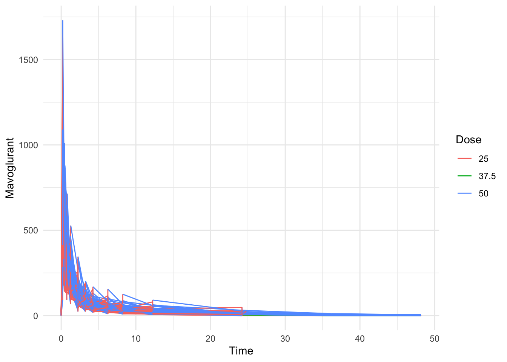
Data Processing
#Filter data
data <- data %>%
filter(OCC == 1) #One entry per person
#Add together all dose values
dose_sum <- data %>%
filter(TIME != 0) %>% #No time zeros (for dose summation)
group_by(ID) %>% #Ensure only DV values for one individual are added together
summarize(Y = sum(DV, na.rm = T))
#Create data frame where only time = 0
time_zero <- data %>%
filter(TIME == 0)
#Join time_zero and dose_sum together to get working dataset
df <- left_join(time_zero, dose_sum, by = "ID")
#Check structure
str(df) #120 x 18 tibble -> goodspc_tbl_ [120 × 18] (S3: spec_tbl_df/tbl_df/tbl/data.frame)
$ ID : num [1:120] 793 794 795 796 797 798 799 800 801 802 ...
$ CMT : num [1:120] 1 1 1 1 1 1 1 1 1 1 ...
$ EVID: num [1:120] 1 1 1 1 1 1 1 1 1 1 ...
$ EVI2: num [1:120] 1 1 1 1 1 1 1 1 1 1 ...
$ MDV : num [1:120] 1 1 1 1 1 1 1 1 1 1 ...
$ DV : num [1:120] 0 0 0 0 0 0 0 0 0 0 ...
$ LNDV: num [1:120] 0 0 0 0 0 0 0 0 0 0 ...
$ AMT : num [1:120] 25 25 25 25 25 25 25 25 25 25 ...
$ TIME: num [1:120] 0 0 0 0 0 0 0 0 0 0 ...
$ DOSE: num [1:120] 25 25 25 25 25 25 25 25 25 25 ...
$ OCC : num [1:120] 1 1 1 1 1 1 1 1 1 1 ...
$ RATE: num [1:120] 75 150 150 150 150 150 150 150 150 150 ...
$ AGE : num [1:120] 42 24 31 46 41 27 23 20 23 28 ...
$ SEX : num [1:120] 1 1 1 2 2 1 1 1 1 1 ...
$ RACE: num [1:120] 2 2 1 1 2 2 1 88 2 1 ...
$ WT : num [1:120] 94.3 80.4 71.8 77.4 64.3 ...
$ HT : num [1:120] 1.77 1.76 1.81 1.65 1.56 ...
$ Y : num [1:120] 2691 2639 2150 1789 3126 ...
- attr(*, "spec")=
.. cols(
.. ID = col_double(),
.. CMT = col_double(),
.. EVID = col_double(),
.. EVI2 = col_double(),
.. MDV = col_double(),
.. DV = col_double(),
.. LNDV = col_double(),
.. AMT = col_double(),
.. TIME = col_double(),
.. DOSE = col_double(),
.. OCC = col_double(),
.. RATE = col_double(),
.. AGE = col_double(),
.. SEX = col_double(),
.. RACE = col_double(),
.. WT = col_double(),
.. HT = col_double()
.. )
- attr(*, "problems")=<externalptr> #Filter to only relevant variables, convert others to factors
df <- df %>%
select(Y, DOSE, AGE, SEX, RACE, WT, HT) %>%
mutate(SEX = as.factor(SEX)) %>%
mutate(RACE = as.factor(RACE))Further Exploratory Data Analysis
#### Summary tables ####
#Get base summary statistics
summary(df) Y DOSE AGE SEX RACE
Min. : 826.4 Min. :25.00 Min. :18.00 1:104 1 :74
1st Qu.:1700.5 1st Qu.:25.00 1st Qu.:26.00 2: 16 2 :36
Median :2349.1 Median :37.50 Median :31.00 7 : 2
Mean :2445.4 Mean :36.46 Mean :33.00 88: 8
3rd Qu.:3050.2 3rd Qu.:50.00 3rd Qu.:40.25
Max. :5606.6 Max. :50.00 Max. :50.00
WT HT
Min. : 56.60 Min. :1.520
1st Qu.: 73.17 1st Qu.:1.700
Median : 82.10 Median :1.770
Mean : 82.55 Mean :1.759
3rd Qu.: 90.10 3rd Qu.:1.813
Max. :115.30 Max. :1.930 #Summary statistics of Y grouped by DOSE
YxDOSE <- df %>%
group_by(DOSE) %>%
summarize(
Mean = round(mean(Y, na.rm = T), 2),
Median = round(median(Y, na.rm = T), 2),
SD = round(sd(Y, na.rm = T), 2),
Min = round(min(Y, na.rm = T), 2),
Max = round(max(Y, na.rm = T), 2)
) %>%
gt() %>%
tab_header(
title = "Summary of Drug Total (Y) by Dose"
)
YxDOSE| Summary of Drug Total (Y) by Dose | |||||
|---|---|---|---|---|---|
| DOSE | Mean | Median | SD | Min | Max |
| 25.0 | 1782.67 | 1666.10 | 600.94 | 826.43 | 3865.79 |
| 37.5 | 2463.91 | 2388.34 | 488.50 | 1800.79 | 3462.59 |
| 50.0 | 3238.87 | 3193.98 | 786.69 | 1948.80 | 5606.58 |
#Summary statistics of Y by Sex and Race
YxSexRace <- df %>%
group_by(SEX, RACE) %>%
summarize(
Mean = round(mean(Y, na.rm = T), 2),
SD = round(sd(Y, na.rm = T), 2),
n = n()
) %>%
gt() %>%
tab_header(
title = "Summary of Drug Total by Sex and Race"
)`summarise()` has grouped output by 'SEX'. You can override using the `.groups`
argument.YxSexRace| Summary of Drug Total by Sex and Race | |||
|---|---|---|---|
| RACE | Mean | SD | n |
| 1 | |||
| 1 | 2468.33 | 995.19 | 63 |
| 2 | 2496.81 | 910.18 | 33 |
| 7 | 1490.93 | NA | 1 |
| 88 | 2612.03 | 974.16 | 7 |
| 2 | |||
| 1 | 2239.02 | 1098.75 | 11 |
| 2 | 2087.38 | 1010.43 | 3 |
| 7 | 2789.70 | NA | 1 |
| 88 | 2092.89 | NA | 1 |
#### Variable Distributions ####
#Plot histograms of select variables
df %>%
select(Y, DOSE, AGE, HT, WT) %>%
pivot_longer(cols = everything(), names_to = "Variable", values_to = "Value") %>%
ggplot(aes(x = Value)) +
geom_histogram(bins = 30, fill = "steelblue") +
facet_wrap(~ Variable, scales = "free") +
theme_minimal() +
labs(
x = "Value",
y = "Count",
title = "Histograms of Age, Dose, Height, Weight, and Drug Levels"
)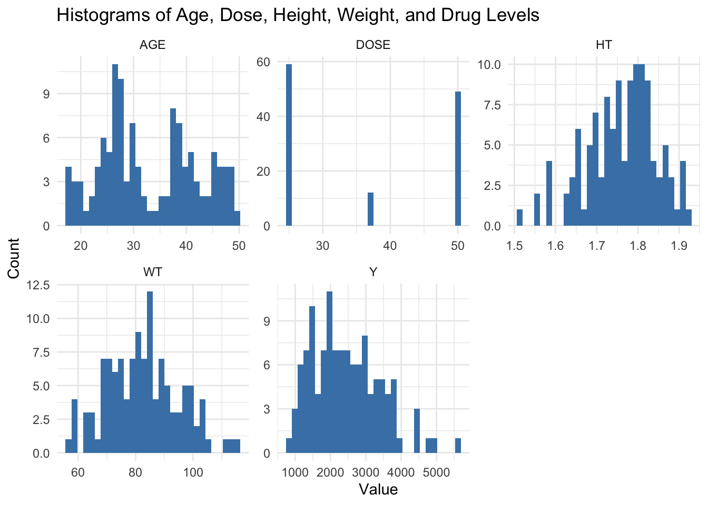
#Plot boxplots of drug levels by dose
ggplot(df, aes(x = as.factor(DOSE), y = Y, fill = as.factor(DOSE))) +
geom_boxplot() +
labs(x = "Dose", y = "Total Drug (Y)", fill = "Dose",
title = "Drug Levels by Dose") +
theme_minimal()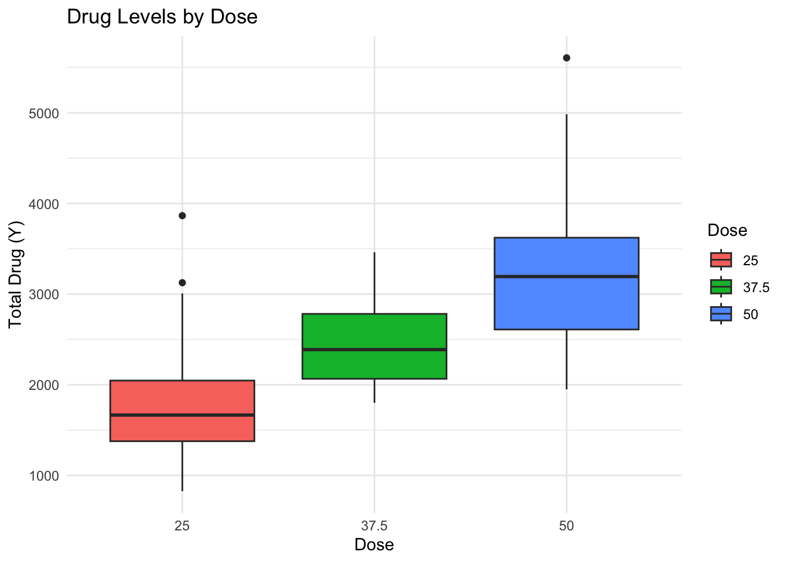
#Plot boxplots of drug levels by sex
ggplot(df, aes(x = SEX, y = Y, fill = SEX)) +
geom_boxplot() +
labs(x = "Sex", y = "Total Drug (Y)", fill = "Sex",
title = "Drug Levels by Sex") +
theme_minimal()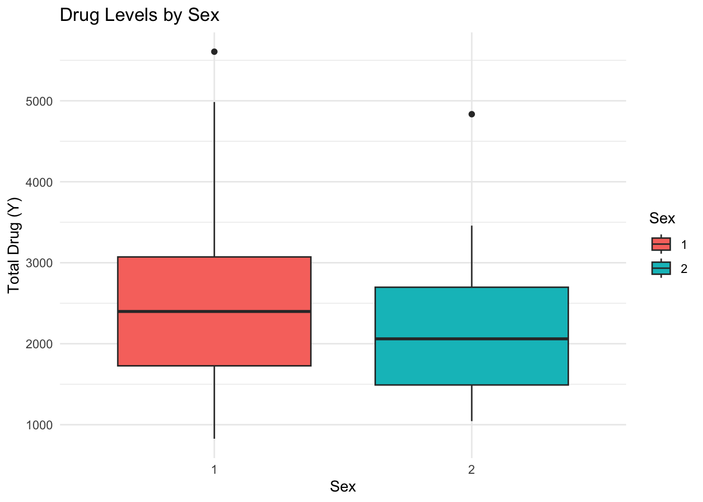
#Plot boxplots of drug levels by race
ggplot(df, aes(x = RACE, y = Y, fill = RACE)) +
geom_boxplot() +
labs(x = "Race", y = "Total Drug (Y)", fill = "Race",
title = "Drug Levels by Race") +
theme_minimal()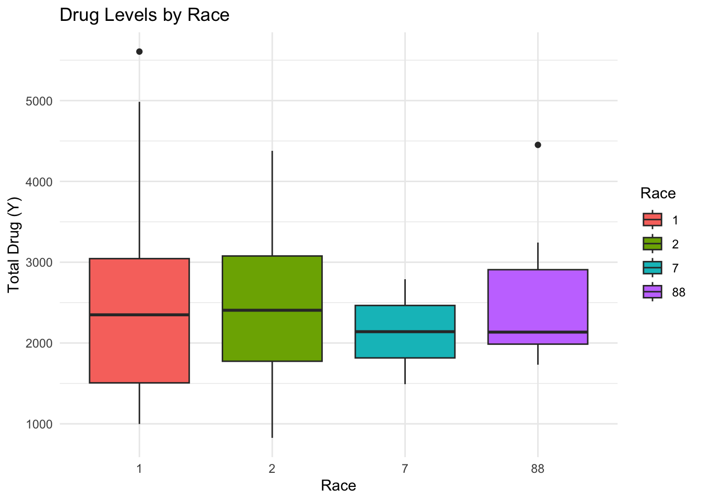
#Plot scatterplot of drug levels by age
ggplot(df, aes(x = AGE, y = Y)) +
geom_point(color = "blue") +
geom_smooth(method = "lm", color = "red", se = FALSE) +
labs(x = "Age", y = "Total Drug (Y)", title = "Total Drug vs. Age") +
theme_minimal()`geom_smooth()` using formula = 'y ~ x'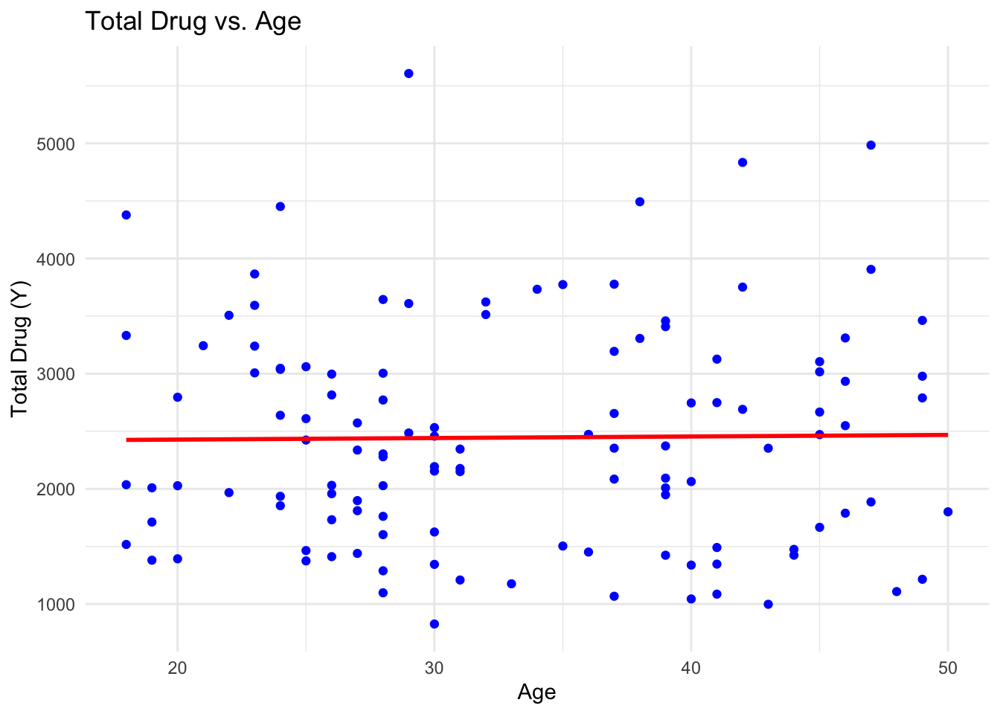
#Plot scatterplot of drug levels by weight
ggplot(df, aes(x = WT, y = Y)) +
geom_point(color = "green") +
geom_smooth(method = "lm", color = "red", se = FALSE) +
labs(x = "Weight", y = "Total Drug (Y)", title = "Total Drug vs. Weight") +
theme_minimal()`geom_smooth()` using formula = 'y ~ x'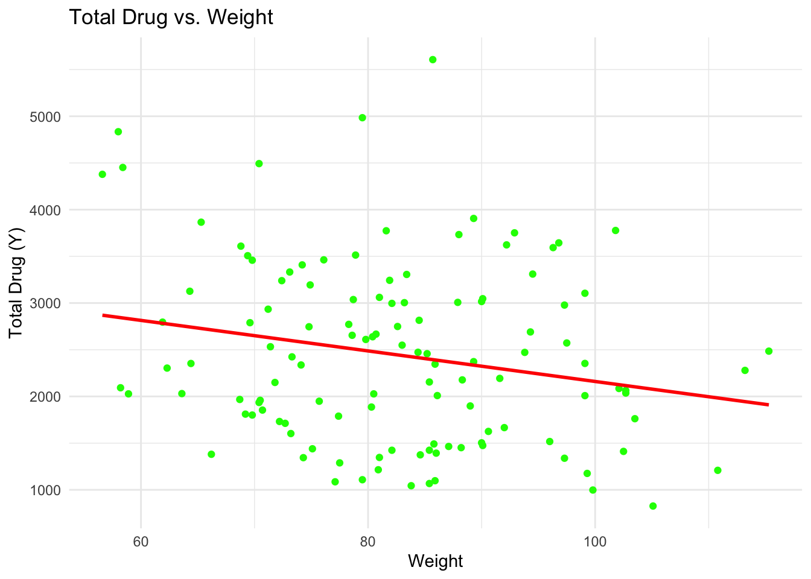
#Plot scatter plot of drug levels by height
ggplot(df, aes(x = HT, y = Y)) +
geom_point(color = "purple") +
geom_smooth(method = "lm", color = "red", se = FALSE) +
labs(x = "Height", y = "Total Drug (Y)", title = "Total Drug vs. Height") +
theme_minimal()`geom_smooth()` using formula = 'y ~ x'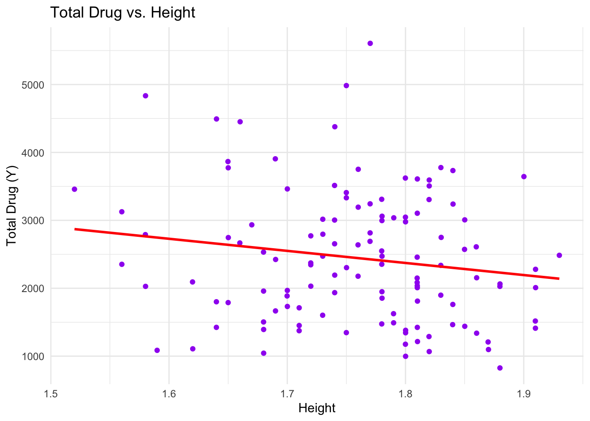
The distribution of age was generally bimodal, with packs around 26 and 37. The distribution of height is slightly right skewed, with a center around 1.8. The distribution of weight was relatively normal, with a center around 83. The distribution of the total drug amount was slightly left skewed, with a center at between 2000 and 2500. For a dosage of 25, the mean drug amount was 1782.67; for a dosage of 37.5, the mean drug amount was 2463.91; and for a dosage of 50, the mean drug amount was 3238.87. Upon visual inspection, there seems to be no association between age and total drug amount and slight negative associations between total drug amount and height and weight.
Modeling
#### Linear modeling of Y ####
#Build model object
lm_model <- linear_reg() #Define model object as a linear regression
#Fit a model predicting Y from DOSE (model 1)
dose_Y_fit <- lm_model %>% fit(Y ~ DOSE, data = df)
#Fit a model predicting Y from all other predictors (model 2)
all_Y_fit <- lm_model %>% fit(Y ~ ., data = df)
#Calculate RMSE and R-squared for both models
metrics1 <- predict(dose_Y_fit, df) %>%
bind_cols(df) %>%
metrics(truth = Y, estimate = .pred)
metrics2 <- predict(all_Y_fit, df) %>%
bind_cols(df) %>%
metrics(truth = Y, estimate = .pred)
#Print metrics for both models
print(metrics1)# A tibble: 3 × 3
.metric .estimator .estimate
<chr> <chr> <dbl>
1 rmse standard 666.
2 rsq standard 0.516
3 mae standard 517. print(metrics2)# A tibble: 3 × 3
.metric .estimator .estimate
<chr> <chr> <dbl>
1 rmse standard 591.
2 rsq standard 0.619
3 mae standard 444. For the model fitting the total drug amount from the dose, the RMSE was 666.462 and the R2 was 0.516. For the model fitting the total drug amount from all available predictors, the RMSE was 590.853 and the R2 was 0.619.
#### Logistic regression of sex ####
#Build logistic regression model object
log_reg <- logistic_reg()
#Fit model predicting sex from dose (model 3)
dose_sex_fit <- log_reg %>% fit(SEX ~ DOSE, data = df)
#Fit model predicting sex from all predictors (model 4)
all_sex_fit <- log_reg %>% fit(SEX ~ ., data = df)
#Calculate accuracy values for both models
m3_acc <- predict(dose_sex_fit, df) %>% #Predict sex using model
bind_cols(df) %>% #Attach predictions to original dataset
accuracy(truth = SEX, estimate = .pred_class) #Compute accuracy
m4_acc <- predict(all_sex_fit, df) %>%
bind_cols(df) %>%
accuracy(truth = SEX, estimate = .pred_class)
#Compute ROC-AUC values for both models
m3_roc_auc <- predict(dose_sex_fit, df, type = "prob") %>% #Predict probabilities of each sex
bind_cols(df) %>%
roc_auc(truth = SEX, .pred_1) #Calculate ROC-AUC
m4_roc_auc <- predict(all_sex_fit, df, type = "prob") %>%
bind_cols(df) %>%
roc_auc(truth = SEX, .pred_1)
#Print metrics
print(paste("Accuracy for model fitting sex from dose:", round(m3_acc$.estimate, 3)))[1] "Accuracy for model fitting sex from dose: 0.867"print(paste("ROC-AUC for model fitting sex from dose:", round(m3_roc_auc$.estimate, 3)))[1] "ROC-AUC for model fitting sex from dose: 0.592"print(paste("Accuracy for model fitting sex from all predictors:", round(m4_acc$.estimate, 3)))[1] "Accuracy for model fitting sex from all predictors: 0.942"print(paste("ROC-AUC for model fitting sex from all predictors:", round(m4_roc_auc$.estimate, 3)))[1] "ROC-AUC for model fitting sex from all predictors: 0.98"The models that used all available predictors had a better fit than the models that used just dose as a predictor.
Model Improvement
For this exercise, I will expand upon previous work to fit simple models and do additional performance assessment.
Further Data Wrangling
#Remove race from the dataset
df <- select(df, -RACE)
#Confirm sucessful removal
summary(df) Y DOSE AGE SEX WT
Min. : 826.4 Min. :25.00 Min. :18.00 1:104 Min. : 56.60
1st Qu.:1700.5 1st Qu.:25.00 1st Qu.:26.00 2: 16 1st Qu.: 73.17
Median :2349.1 Median :37.50 Median :31.00 Median : 82.10
Mean :2445.4 Mean :36.46 Mean :33.00 Mean : 82.55
3rd Qu.:3050.2 3rd Qu.:50.00 3rd Qu.:40.25 3rd Qu.: 90.10
Max. :5606.6 Max. :50.00 Max. :50.00 Max. :115.30
HT
Min. :1.520
1st Qu.:1.700
Median :1.770
Mean :1.759
3rd Qu.:1.813
Max. :1.930 #Set random seed for data splitting
set.seed(rngseed)
#Split data into a 75% training set and a 25% testing set
data_split <- initial_split(df, prop = 3/4)
#Set data frames for the training and testing sets
train <- training(data_split)
test <- testing(data_split)New Model Fitting
#### Fit new linear models using training data ####
#Fit a model predicting Y from DOSE (model 1)
dose_Y_fit <- lm_model %>% fit(Y ~ DOSE, data = train)
#Fit a model predicting Y from all other predictors (model 2)
all_Y_fit <- lm_model %>% fit(Y ~ ., data = train)Model Performance Assessment 1
#Calculate RMSE and R-squared for both models using training data
metrics1 <- predict(dose_Y_fit, train) %>%
bind_cols(train) %>%
metrics(truth = Y, estimate = .pred)
metrics2 <- predict(all_Y_fit, train) %>%
bind_cols(train) %>%
metrics(truth = Y, estimate = .pred)
#Print metrics for both models
print(metrics1)# A tibble: 3 × 3
.metric .estimator .estimate
<chr> <chr> <dbl>
1 rmse standard 703.
2 rsq standard 0.451
3 mae standard 546. print(metrics2)# A tibble: 3 × 3
.metric .estimator .estimate
<chr> <chr> <dbl>
1 rmse standard 627.
2 rsq standard 0.562
3 mae standard 486. #Fit a null model using the training data
null_mod <- null_model() %>%
set_engine("parsnip") %>%
set_mode("regression")
null_fit <-
null_mod %>%
fit(Y ~ 1, data = train)
#Compute RMSE and R-squared for a null model
metrics_null <- predict(null_fit, train) %>%
bind_cols(train) %>%
metrics(truth = Y, estimate = .pred)Warning: A correlation computation is required, but `estimate` is constant and has 0
standard deviation, resulting in a divide by 0 error. `NA` will be returned.#Print metrics for the null model
print(metrics_null)# A tibble: 3 × 3
.metric .estimator .estimate
<chr> <chr> <dbl>
1 rmse standard 948.
2 rsq standard NA
3 mae standard 765.Model Performance Assessment 2
#### Evaluate the model using cross-validation (CV) with the training data ####
#Reset random seed
set.seed(rngseed)
#Set CV folds (n = 10)
folds <- vfold_cv(train, v = 10)
#Define workflow for CV
cv_wf <-
workflow() %>%
add_model(lm_model)
#Fit a model predicting Y from dose using the CV folds
model1_fit_cv <-
cv_wf %>%
add_formula(Y ~ DOSE) %>%
fit_resamples(folds)
#Fit a model predicting Y from all predictors using the CV folds
model2_fit_cv <-
cv_wf %>%
add_formula(Y ~ .) %>%
fit_resamples(folds)
#Create a recipe with only the outcome (removing all predictors for a null model)
null_recipe <- recipe(Y ~ 1, data = train)
#Define a new workflow for a null model
cv_wf_null <-
workflow() %>%
add_model(null_mod) %>%
add_recipe(null_recipe)
#Fit the null model using CV folds
null_fit_cv <- fit_resamples(cv_wf_null, folds)→ A | warning: A correlation computation is required, but `estimate` is constant and has 0
standard deviation, resulting in a divide by 0 error. `NA` will be returned.There were issues with some computations A: x1There were issues with some computations A: x10#Display metrics of all models
collect_metrics(model1_fit_cv)# A tibble: 2 × 6
.metric .estimator mean n std_err .config
<chr> <chr> <dbl> <int> <dbl> <chr>
1 rmse standard 691. 10 67.5 Preprocessor1_Model1
2 rsq standard 0.512 10 0.0592 Preprocessor1_Model1collect_metrics(model2_fit_cv)# A tibble: 2 × 6
.metric .estimator mean n std_err .config
<chr> <chr> <dbl> <int> <dbl> <chr>
1 rmse standard 646. 10 64.8 Preprocessor1_Model1
2 rsq standard 0.573 10 0.0686 Preprocessor1_Model1collect_metrics(null_fit_cv)# A tibble: 2 × 6
.metric .estimator mean n std_err .config
<chr> <chr> <dbl> <int> <dbl> <chr>
1 rmse standard 933. 10 76.7 Preprocessor1_Model1
2 rsq standard NaN 0 NA Preprocessor1_Model1After completing the ten-fold cross-validation, the null model performed largely the same, and the model fitting Y from all predictors performed better than the model fitting Y from just dose. However, the difference in performance between the two non-null models was less pronounced.
#### Re-running CV using a new seed ####
#Reset seed
set.seed(22)
#Set CV folds (n = 10)
folds <- vfold_cv(train, v = 10)
#Fit a model predicting Y from dose using the CV folds
model1_fit_cv <-
cv_wf %>%
add_formula(Y ~ DOSE) %>%
fit_resamples(folds)
#Fit a model predicting Y from all predictors using the CV folds
model2_fit_cv <-
cv_wf %>%
add_formula(Y ~ .) %>%
fit_resamples(folds)
#Fit the null model using CV folds
null_fit_cv <- fit_resamples(cv_wf_null, folds)→ A | warning: A correlation computation is required, but `estimate` is constant and has 0
standard deviation, resulting in a divide by 0 error. `NA` will be returned.There were issues with some computations A: x1There were issues with some computations A: x10#Display metrics of all models
collect_metrics(model1_fit_cv)# A tibble: 2 × 6
.metric .estimator mean n std_err .config
<chr> <chr> <dbl> <int> <dbl> <chr>
1 rmse standard 699. 10 53.1 Preprocessor1_Model1
2 rsq standard 0.472 10 0.0722 Preprocessor1_Model1collect_metrics(model2_fit_cv)# A tibble: 2 × 6
.metric .estimator mean n std_err .config
<chr> <chr> <dbl> <int> <dbl> <chr>
1 rmse standard 642. 10 53.9 Preprocessor1_Model1
2 rsq standard 0.545 10 0.0694 Preprocessor1_Model1collect_metrics(null_fit_cv)# A tibble: 2 × 6
.metric .estimator mean n std_err .config
<chr> <chr> <dbl> <int> <dbl> <chr>
1 rmse standard 946. 10 64.4 Preprocessor1_Model1
2 rsq standard NaN 0 NA Preprocessor1_Model1With a new seed, the mean RMSE values of the models predicting Y from all predictors and from just dose were about the same. However, the standard errors of both metrics were lower, and the standard error for the model with dose as the only predictor was slightly lower than the standard error of the model with all predictors.
#This section was added by Alexis Gonzalez Creating data frames with observed and predicted values
dose_preds <- predict(dose_Y_fit, new_data = train) %>%
bind_cols(train$Y) %>%
mutate(Model = "Model 1")New names:
• `` -> `...2`colnames(dose_preds) <-c("Predicted", "Observed", "Model")all_preds <- predict(all_Y_fit, new_data = train) %>%
bind_cols(train$Y) %>%
mutate(Model = "Model 2")New names:
• `` -> `...2`colnames(all_preds) <-c("Predicted", "Observed", "Model")#Null model ( i had issues with null model so I am making the predictions and everything over again)
null_mod_new <- null_model(mode = "regression") %>%
set_engine("parsnip") %>%
fit(Y ~ 1, data= train)
null_preds <- predict(null_mod_new, new_data = train) %>%
bind_cols(train$Y) %>%
mutate(Model = "Null")New names:
• `` -> `...2`colnames(null_preds) <-c("Predicted", "Observed", "Model")#Plotting the values on a scatter plot observed vs predicted
#combining all into 1 dataframe
all_models <- bind_rows(dose_preds,all_preds,null_preds)#PLOT
ggplot(all_models, aes(x= Observed, y=Predicted, color = Model, shape = Model)) +
geom_point(alpha = 0.7, size = 3) +
geom_abline(slope = 1, intercept = 0, linetype = "solid", color = "black") +
labs(title = "Observed vs. Predicted values for Each Model",
x = "Observed",
y = "Predicted") +
theme_minimal() +
scale_color_manual(values = c("pink","purple","blue")) +
scale_shape_manual(values = c(16,17,18)) +
coord_cartesian(xlim = c(0,5000), ylim = c(0,5000)) +
theme(legend.title = element_blank())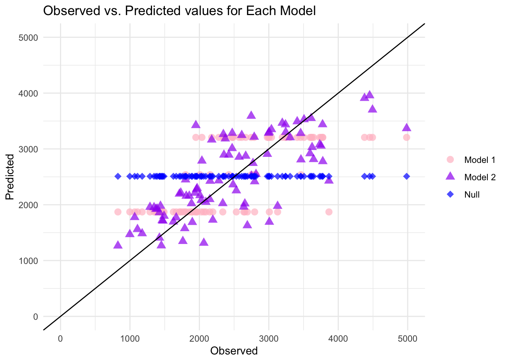
#Plotting the residuals for Model 2, the one with all of the variables
#Calculate the residuals
Model2 <- all_preds %>%
mutate(Residuals = Observed - Predicted)ggplot(Model2, aes(x = Observed, y=Residuals)) +
geom_point(color = "blue", alpha = 0.6) +
geom_hline(yintercept = 0, linetype = "dashed", color = "red") +
labs(title = "Residuals vs. Fitted for Model 2",
x = "Fitted Values",
y = "Residuals") +
theme_minimal()+
coord_cartesian(xlim = c(0,5000), ylim = c(-5000,5000))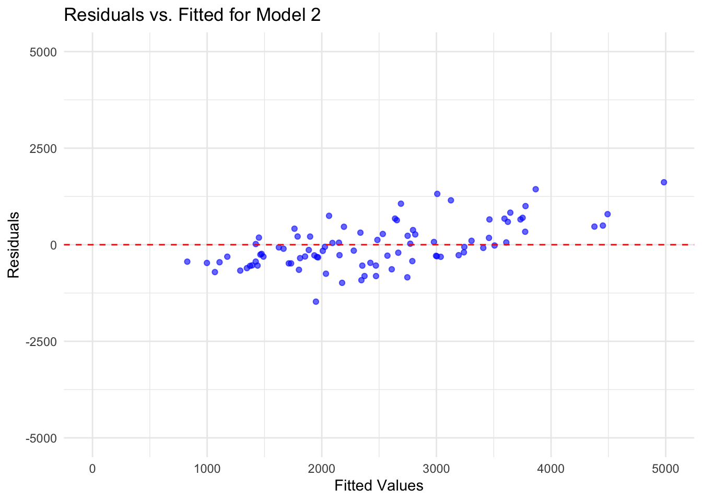
#Model predictions and uncertainty
set.seed(rngseed)#Create 100 bootstraps
bootstrap_samples <- lapply(1:100, function(i) {
sample(nrow(train), replace = TRUE)
})#Creating a loop to fit model 2 to each bootstrap
bootstrap_preds <- vector("list", 100)
for (i in 1:100) {
boot_model <- lm(Y ~ . , data = train[bootstrap_samples[[i]], ])
predictions <- predict(boot_model, newdata = train)
bootstrap_preds[[i]] <- predictions
}
predictions_df <- do.call(cbind, bootstrap_preds) preds <- predictions_df|> apply(2, quantile, c(0.025, 0.5, 0.975)) |> t()#Plot the data
# 1. Point estimate (mean of the original model predictions)
point_estimate <- rowMeans(predictions_df) # mean of predictions from all bootstrap samples
# 2. Median of the bootstrap predictions
median_preds <- apply(predictions_df, 1, median) # median across rows
# 3. Confidence intervals (95% CI) for bootstrap predictions
lower_bound <- apply(predictions_df, 1, function(x) quantile(x, 0.025)) # 2.5 percentile
upper_bound <- apply(predictions_df, 1, function(x) quantile(x, 0.975)) # 97.5 percentile# Combine observed values, point estimates, and confidence intervals into a data frame
plot_data <- data.frame(
Observed = train$Y, # Observed values
PointEstimate = point_estimate,
Median = median_preds,
LowerCI = lower_bound,
UpperCI = upper_bound
)ggplot(plot_data, aes(x = Observed)) +
geom_point(aes(y = PointEstimate), color = "black", shape = 16, size = 2, alpha = 0.7) +
geom_point(aes(y = Median), color = "purple", shape = 17, size = 2, alpha = 0.7) +
geom_point(aes(y = LowerCI), color = "pink", shape = 18, size = 2, alpha = 0.7) +
geom_point(aes(y = UpperCI), color = "pink", shape = 18, size = 2, alpha = 0.7) +
geom_abline(slope = 1, intercept = 0, linetype = "solid", color = "black") +
labs(title = "Observed vs. Predicted (Bootstrap Confidence Intervals)",
x = "Observed",
y = "Predicted (Point Estimate, Median, CI)") +
theme_minimal() +
theme(axis.text.x = element_text(size = 8, angle = 45, hjust = 1)) +
scale_color_manual(values = c("black", "purple", "pink"))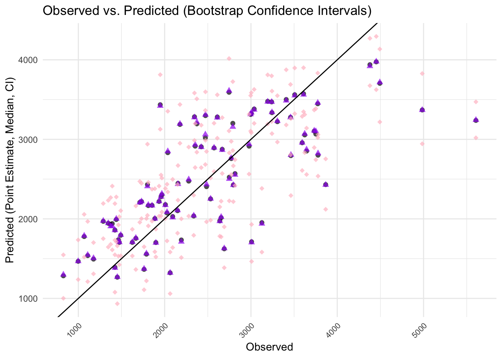
The orginal model for Model 2 and the bootstrapped model look very similar indicating that model is performing consistently. This also suggest that the model if well fit and will adapt well to new data. This data is also fit well to the line, the closer it is to that 45 degree line, the closer the actual and observed values are.